This device cannot display Java animations. The above is a substitute static image
1. Parabola
The applet initially shows an arc that is part of the graph of a parabola. Initially, we approximate the length of this arc by a straight segment connecting the end points. This is clearly not a very good approximation, but we can do better by increasing the number of segments. Move the intervals slider to increase the number, and see how the black set of segments more closely approximates the magenta curve.
Note that the approximate length gets closer and closer to the actual length. If we let Δ
x be the change in
x between the endpoints of a straight line segment and Δ
y be the change in
y, then from the distance formula the length of the segment is
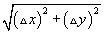
Unfortunately, this doesn't look like the element of a Riemann sum, which should be a function of some variable times a little bit of that variable. We can massage this into that form with a little algebra by factoring a Δ
x out of the radical to get
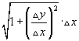
Summing this up and taking the limit as Δ
x goes to zero gives us the definite integral
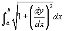
where
a <
b. Since
dy/
dx =
f '(
x) if
f is the function whose arc length is being measured, this integral is more commonly written as
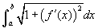
In our example this integral becomes
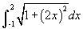
where 2
x is the derivative of
x². It is common that arc length integrals generate integrands for which it is not simple to find the antiderivative, hence it is usually best to evaluate arc length integrals numerically.
2. Inverse
Select the second example from the drop down menu. This is essentially the same example, except that now x is a function of y. The general formula is just
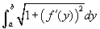
and the specific example in this case is
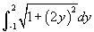
The length is the same, since this is really the same as the first example, just mirrored through the line
y =
x.
3. Parametric
Select the third example from the drop down menu, showing a parametric curve. The curve is a semicircle (if it looks squashed a bit, click the Equalize Axes button). You can move the intervals slider to make the approximation closer to the actual answer, which we know from geometry is π. Since our independent variable in parametric equations is t, we can go back to the original distance formula
and factor a Δt out of the radical to get
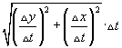
Summing this up and taking the limit as Δ
t goes to zero gives us the integral
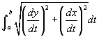
Note that here
a and
b are
t limits, not
x limits. To evaluate for our example we just plug in the derivatives of the two parametric equations to get
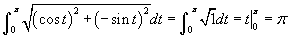
Note that this integral can be evaluated exactly, using the Pythagorean Identity to simplify the integrand.
4. Polar
Select the fourth example, showing a polar curve. In this example, th is used instead of θ to make it easier to type from the keyboard. Move the intervals slider see how the approximation gets better as the number of segments increases. To find the arc length, first we convert the polar equation r = f (θ) into a pair of parametric equations x = f (θ)cosθ and y = f (θ)sinθ. We then use the parametric arc length formula
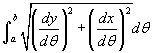
where the two derivatives are of the parametric equations. Our example becomes
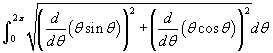
which is best evaluated numerically.
(You can greatly simplify the radicand by finding the derivatives, expanding the terms, and simplifying with the Pythagorean Identity, but the result is still not a simple enough integrand).
Explore
You can explore your own arc lengths by selecting the example that matches the type of curve (normal, inverse, parametric, polar) in which you are interested, then setting a and b and zooming/panning as usual. Note that if you set a > b the resulting length comes out negative. Since length is usually defined to be positive, you should keep a < b.
Other 'Applications of Integration' topics
(C) 2011 Copyright Math Open Reference.
All rights reserved